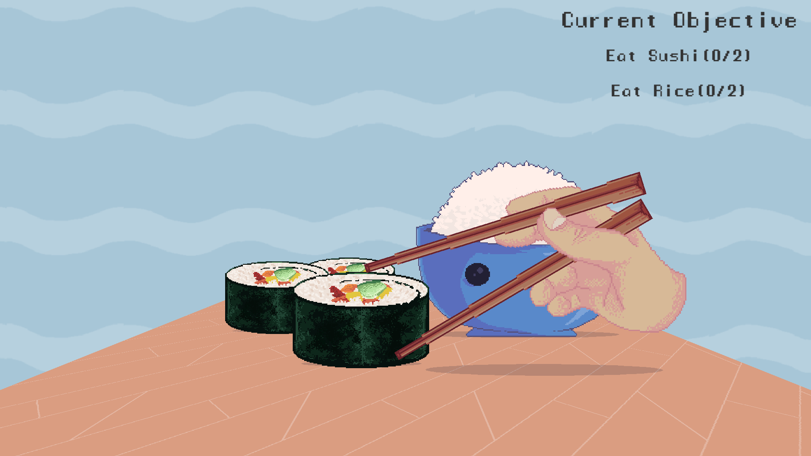
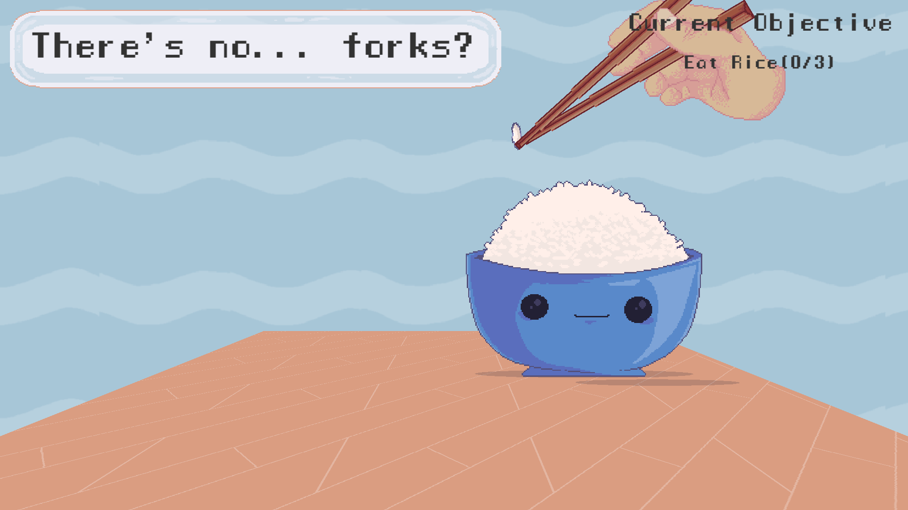

Chopsticks Simulator
- Team project, developed as entry to Game Maker's Toolkit 2020 Game Jam
- I was responsible with programming and design, working alongside an artist
- Developed in Unity
Chopsticks Simulator is a cute game developed for GMTK Jam 2020. Our take on the theme "out of control" was having an unconvential control scheme, which fits with the real life theme of wielding chopsticks. The game made the top 100 games on Originality.
The game is short and sweet and highly accesible. The game features a quest system, dialogue, and juicy effects when eating food in the form of sound effects and screen shake.
 